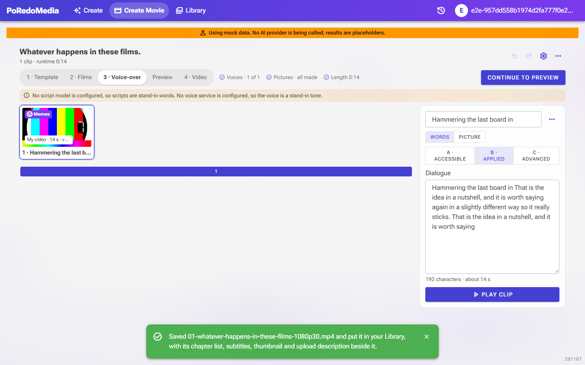
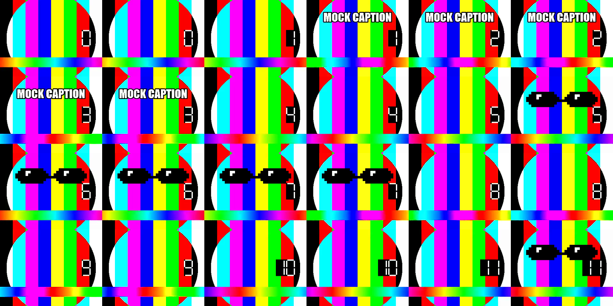

BEFORE
Clips joined as they were
- Films and AI clips went into the movie with their voice-over only.
- The finished movie stayed in Create Movie until Add to Library was pressed.
- Films up to 2 minutes; no limit on a movie's length.
AFTER
Every clip is meme-ified, and the movie lands in the Library
- Rendering asks first, with the cost, then puts each film and AI video clip through Meme-ify: meme sounds, stickers, text, effects and a spoken roast (no roast in kids' videos).
- A Memes badge marks each clip that has been through.
- The finished movie goes into the Library by itself ("In your Library").
- Each clip under a minute; a movie up to 10 minutes, checked before anything is paid for.
- No server speech model: the browser hears films that keep their sound.

One meme-ified clip, two frames a second
Meme text and "deal with it" stickers placed by Meme-ify's director; its 10 sound cues (meme sounds and roast lines) are mixed over the voice-over.
